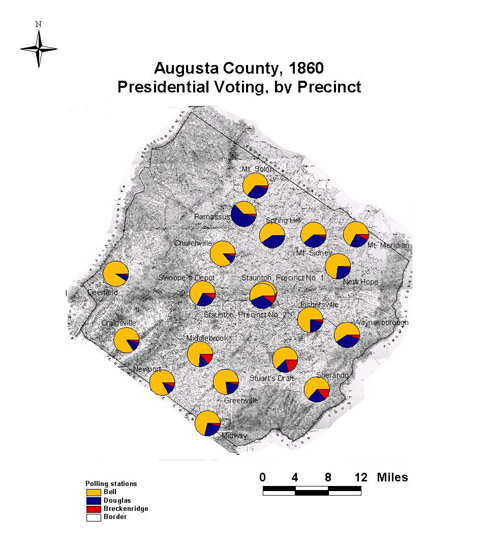

Augusta County: Presidential Voting by Precinct, 1860
This map of Augusta County, Virginia shows the presidential vote of 1860 by precinct. Bell's overwhelming victory overshadows subtle electoral patterns in the Douglas-Breckinridge-Bell split. The Democratic candidates together captured significant votes in Staunton and in the eastern and northern parts of the county, the broad middle part of the valley just east of Staunton. These places included some of the largest farms and plantations.
Click on the map for a larger image.

The map is derived from a Jedediah Hotchkiss map of Augusta County, published in 1870 and based on surveys completed "during the war." The Hotchkiss map has been georeferenced at the Virginia Center for Digital History, using ESRI Arc Info to produce a Geographic Information Systems map and database of households.
Note: Original precinct boundaries are not available. Precinct boundaries were established in the GIS using Thiessen polygons around precinct stations as central places.